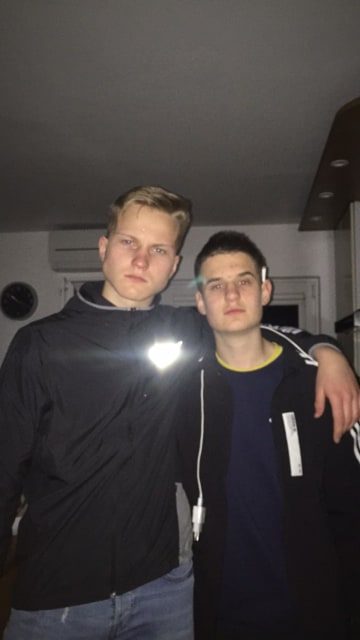

Matija Kabič
Matija Kabič je dijak Srednje Medijske in Grafične šole. Star je 16 let in prihaja iz Slovenije/Kranja. Rad je kreativen in socialen. Ob prostem času rad igra nogogmet in se druži s prijateljem Jakobom.
